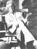
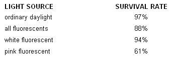

What's the matter with our modern, technologically based society anyway? Why isn't it more satisfying? Why do so many of us now feel that some vague something hounds us, and diminishes us and makes us into something less than we should be? Most specifically of all, do we really use televisionand so many other "benefits" and "tools" of our technological age-or does it use us? Jerry Mander (see photo) speaks the unspeakable and asks the unaskable in a remarkable new book that is being completely serialized in this magazine. This is the third installment in the series.
From Four Arguments for the Elimination of Television by Jerry Mander, copyright 0 1977 by the author. Reprinted with the permission of William Morrow and Company, Inc. Available in paperback for $4.95 from any good bookstore or for $4.95 plus 95c shipping and handling from Mother's Bookshelf, P.O. Box 70, Hendersonville, North Carolina 28739.
Television technology produces neurophysiological responses in the people who watch it. It may create illness, it certainly produces confusion and submission to external imagery. Taken together, the effects amount to conditioning for autocratic control.
During the years I was preparing this book, occasional pieces of publicity appeared about it. With each exposure mail would arrive in my home. From one article alone I received more than two hundred fifty letters. Most were passionate and troubled. It became clear that watching TV was an experience that an amazing number of people were eager to describe.
I also kept an informal record of the terms people used in ordinary conversation to describe how they felt about television. In all, I recorded about two thousand conversational and written descriptions.
While I make no claims about this amounting to any kind of bona fide scientific sampling, the phrases people chose had a definite consistency. To give you an idea, I'm going to list the fifteen phrases most frequently used.
If you could somehow drop all preconception of television and read this list as though people were describing some instrument you'd never seen yourself, I think the picture you would obtain is of a machine that invades, controls and deadens the people who view it. It is not unlike the alien-operated "influencing machine" of the psychopathic fantasy.
1) "I feel hypnotized when I watch television."
2) "Television sucks my energy."
3) "I feel like it's brainwashing me."
4) "I feel like a vegetable when I'm stuck there at the tube."
5) "Television spaces me out."
6) "Television is an addiction and I'm an addict."
7) "My kids look like zombies when they're watching."
8) "TV is destroying my mind."
9) "My kids walk around like they're in a dream because of it."
10) "Television is making people stupid."
11) "Television is turning my mind to mush."
12) "If a television is on, I just can't keep my eyes off it."
13) "1 feel mesmerized by it."
14) "TV is colonizing my brain."
15) "How can I get my kids off it and back into life?"
At one point I heard my son Kai say: "I don't want to watch television as much as I do but I can't help it. It makes me watch it."
I don't mean to suggest that there weren't many favorable reports. Often the people who described themselves as "spaced out" liked that experience. They said it helped them forget about their otherwise too busy lives.
Many added the word "meditative"; others found it "relaxing," saying that it helped them "forget about the world." Some who used terms like "brainwashed" or "addicted" nonetheless felt that television provided them with good information or entertainment, although there was no one who felt television lived up to its "potential."
In all the time I collected responses, only eight people suggested they watched too little.
I also kept track of my own reactions. Though I now watch very little television-perhaps two or three hours per month, just to keep my hand in, as it were-I used to watch more. My reactions to the experience invariably reduced to one or two constants. Even if the program I'd been watching had been of some particular interest, the experience felt "antilife," as though I'd been drained in some way, or I'd been used. I came away feeling a kind of internal deadening, as if my whole physical being had gone dormant, the victim of a vague soft assault. The longer I watched, the worse I'd feel. Afterward, there was nearly always the desire to go outdoors or go to sleep, to recover my strength and my feelings. Another thing. After watching television, I'd always be aware of a kind of glowing inside my head: the images! They'd remain in there even after the set was off, like an aftertaste. Against my will, I'd find them returning to my awareness hours later.
My objective in keeping all these records was not so much to catalog how many people liked television and how many did not, or how many felt guilty about their habit, but rather to gather descriptions of the experience in the terms people chose to describe it.
After a while, I came to realize that people were describing concrete physical symptoms that neither they nor anyone else actually believed were real. The people who would tell me that television was controlling their minds would then laugh about it. Or they would say they were addicted to it, or felt like vegetables while watching, and then they'd laugh at that.
People were saying they were being hypnotized, controlled, drugged, deadened, but they would not assign validity to their own experience. Yet if there is any truth in these descriptions, we are dealing with a force that is far more powerful and subtle than Huxley's hypnopaedic machines. If television "hypnotizes," "brainwashes ... .. controls minds," "makes people stupid," "turns everyone into zombies," then you would think it would be an appropriate area of scientific inquiry. In fact, someone should call the police.
Science has a name for such collections of descriptions. They are called "anecdotal evidence" or "experiential reports." Such reports are not totally ignored by researchers, although they are not exactly taken seriously either. In the case of television, there is the problem that the symptoms are not fatal, they are subtle. Few people go to doctors complaining about them. They therefore remain below the threshold of visibility for scientific inquiry. Even when such reports are noticed, science does not accept them as valid unless they have been put through the grinder of scientific proof. Since it is beyond science to validate exactly what is meant by "zombie" or "brainwash" or even "addiction" or, as we will see, even "hypnosis," these symptoms inevitably remain unproved, leaving people who need external validation at a loss.
I have already stated my opinion that one major result of modern science has been to make people doubt what they would otherwise accept as true from their own observation and experience. Science, medicine, psychology and economics all deeply depend on people being mystified by their own experience and blind to the strict limits of scientific method.
In this country, where intervention between humans and their inner selves is so very advanced, the mystification is virtually total.
If the National Institutes of Health funded a $5 million study over a three-year period which gathered together all the "experts" to determine the effects of television on the body and mind, and then reported its findings to the President of the United States, who, frightened by the results, then appointed a commission of scholars and other experts to do it over again, one of whom smuggled a copy of the original "findings" to The New York Times, which then carried it on page one: SUPPRESSED STUDY SUGGESTS TELEVISION IS ADDICTIVE, HYPNOTIC, STOPS THOUGHT: SIMILAR TO BRAINWASHING: OTHER PHYSICAL EFFECTS NOTED, then people would say, "You know, I always thought that might be true."
In my opinion, if people are watching television for four hours every day and they say they can't stop it, and also say that It seems to be programming them in some way, and they are seeing their kids go dead, then really, I deeply feel there is no need to study television. This evidence is what lawyers call "prima facie" proof. The only question is how to deal with it. I am satisfied that most people are already perfectly aware of what television is doing to them, but they remain tranquilized by the general wisdom that: the programming is the problem, and it is useless to attempt to change it anyway. Television is here to stay.
In the end, however, perhaps because this mystification also lurks in me, I decided to ask around in the scientific community to see who, if anyone, was concerned about the nature of the television experience.
I contacted the Brain Information Service of the Bio-Medical Library of UCLA and spoke with Dr. Doris Dunn there. I asked her if that was an appropriate place to seek any published materials, including doctoral dissertations, which could relate television to a variety of medical and physiological syndromes.
She told me that the computer there could scan as many as a half million items covering the neuroscience literature published since 1969. She said it was probably as thorough a scanning service as existed for this kind of material.
I told her that I was interested in anything that made any relationship between television and the following: Hypnosis, addiction, hyperactivity, the neurophysiology of light reception, brainwashing, dreaming, 'thinking, brainwave activity.
I told her that I was also interested in anything that could be uncovered concerning any neurophysiological responses to television and that I'd appreciate her adding her own creative good judgment.
I asked her If she thought much would turn up; she said she doubted it.
Later I called her back to tell her that, thinking it over, I realized she'd probably turn up quite a lot on X-radiation from television sets and that I didn't need it. A lot had already been published on that.
To get a sense of comparison, I asked her how many items she would expect to turn up in some other area of inquiry. I anticipated being able to make the point that science has failed to look at television as an instrument that produces biological reactions and that this in itself reveals an almost blind acceptance of the medium.
Two weeks later, I received a bibliography of seventy-eight items, covering the period 19691975. Dr. Dunn's covering letter said I could get a sense of comparison from the fact that for a subject like sleep and dreaming about one thousand items would be filed every year. On EEG brainwave activity "several thousand" are filed every year. However, not one of the dreaming articles contained significant reference to television, and only one article on brainwave activity referred to a relationship with television.
Of the seventy-eight references, there were twenty articles concerning a condition called "television epilepsy"-in which otherwise nonepileptic people go into fits while watching television-and several on eye damage, heart rate changes according to the program content, and some on X-radiation, which I'd anticipated.
Of the half million articles scanned by the computer, only two spoke of any relationship between television and hypnosis. There was one about television causing headaches, several on the effects of television on perceptions of scale and distance, and about a dozen on the effects of television on young people. (These latter articles turned out to be "behavioral," not physiological, articles which slipped through the gates.)
It is clear that the neurophysiological effect of television is no hot subject for scientific research.
To augment and also double-check the Brain Information Service, I asked San Francisco journalist and researcher Mickey Friedman if she would do some digging through the Psychological Abstracts, which contain virtually the same listings as the computer, but carry the subject categories back for several more decades. Friedman went all the way back to 1940 and found only nine additional references, including one on addiction, the first one, and one on hypnosis.
Then, in the spring of 1977, an extremely interesting book appeared, the first to argue that the experience of television-the act of watching it-is more significant than the content of the programs being watched. The Plug-In Drug by Marie Winn caused a sensation among worried parents, psychologists and educators. It asserted that television viewing by children was addictive, that it was turning a generation of children into passive, incommunicative "zombies" who couldn't play, couldn't create, and couldn't even think very clearly.
I read through the book seeking the sources of Marie Winn's research only to discover that she had run up against the same dearth of research that was already apparent to me. This did not stop her, to her credit, as she strung together long interviews of parents, children, and educators. She gave validity to a series of experiential reports that were parallel to those I'd collected. She combined these with whatever could be gathered from non-television-related research on cognition, on reading patterns, on verbal and nonverbal thinking, and on the observations of other writers, and what she could gather from her own observance of the television experience.
She drew a horrifying picture of a generation of children who were growing up without the basic skills that most earlier generations had used to get through life, children who could not even solve the problem of dealing with free time. She also described the disassembling effects television has upon family life, in which communication and even direct affection and participation in each other's lives were being processed through television experience, to the extreme detriment of everyone.
Having gone as far as she went, however, Marie Winn didn't apply her findings to adults and didn't relate any of the effects of television to the power drives of the wider society.
I decided to continue digging and soon found myself creating my own horrifying picture of television's effect and how It fits the needs of the juggernaut. The nature of the viewing experience itself, the technology of fixation (which I already knew from advertising), new research on biological effects, together with discoveries about the power of implanted imagery, combine to create a pattern in which the newly diminished role of the human being is more and more apparent.
Television is watched in darkened rooms. Some people leave on small lights, or daylight filters in, but it is a requirement of television viewing that the set be the brightest image in the environment or it cannot be seen well.
To increase the effect, background sounds are dimmed out just as the light is. An effort is made to eliminate household noises. The point, of course, is to further the focus on the television set. Awareness of the outer environment gets in the way.
Many people watch television alone a substantial amount of the time. This eliminates yet another aspect of outer awareness. Even while watching with others, a premium is placed upon quiet. Talking interferes with attention to the set. If you like to look at people while talking, turning your head actually breaks attention. So other people are dimmed out like the light, the sounds, and the rest of the world.
Dimming out your own body is another part of the process. People choose a position for viewing that allows the maximum comfort and least motion, that is, the least awareness of the body because like awareness of external light, sound or other stimuli, awareness of your own body can detract from the focus on the television. Positions are chosen in which arms and legs will not have to be moved. One may shift weight from time to time, or go for a snack, but for most of the experience, the body is quiet.
This dimming out is also true of the internal organs. The heartbeat slows to idle, the pulse rate tends to even out, the brainwave patterns go into a smooth and steady rhythm. The consequences of all this will be examined a little later. For now, let's just say that thinking processes also dim.
Overall, while we are watching television, our bodies are in a quieter condition over a longer period of time than in any other of life's nonsleeping experiences. This is true even for the eyes, which are widely presumed to be active during television viewing. In fact, the eyes move less while watching television than in any other experience of daily life. This is particularly so if you sit at a distance from the set or if your set is small. In such cases you take in the entire image without scanning. Even with huge television screens, the eyes do not move as much as they do when seeing a movie, where the very size of the theater screen requires eye and even head movement.
Even when you are working in an office, or reading a book, the eyes move more than they do while watching television. In offices there are always interruptions. While reading, you vary the speed at which you read, go over material and raise your eyes off the page from time to time.
In the wider world outside of the media, the eyes almost never stop moving, searching and scanning. For humans, the eyes are "feelers"; ' they are one of our major contacts with the world and are forever reaching and studying.
While you are watching television, in addition to the nonmovement of the eyeball, there is a parallel freezing of the focusing mechanism. The eye remains at a fixed distance from the object observed for a longer period of time than in any other human experience.
There are cultures' that spent time gazing at the sun, but there is no culture in all of history that has spent such enormous blocks 0 time ... in dark of time rooms looking at artificial light.
Ordinarily, the process of focusing, defocusing and refocusing engages the eye nonstop all day long, even during sleeping and dreaming. But while you are watching television, no matter what is happening on the screen, however far away the action of the story is supposed to be inside the set, the set itself remains at a fixed distance and requires only an infinitesimal change in focus. As we shall see, the result is to flatten all information into one dimension and to put the viewer in a condition akin to unconscious staring.
However idle the eyes are during television watching, they are positively lively compared to the other senses. Sound is reduced to the extremely narrow ranges of television audio, while smell, taste and touch are eliminated altogether.
McLuhan made the case that television stimulates the sense of touch. He calls TV "tactile." I don't know if he intended that as one of his personal jokes, which got taken too seriously, or if he actually meant it, but it is one of the most dangerous of the many misleading statements he made.
He suggests that light playing against the skin is itself stimulating. The silliness of that statement can be gathered by merely comparing that low-level stimulation with the sort of stimulation the skin would receive from just about any minor body movement. Reaching for a grape involves more bodywide skin stimulation: clothes against skin, stretching, cool grapes bursting sour in the mouth.
Worse, McLuhan implies that in seeing images on a screen, the human is inclined to act on them, thereby inciting the sense of touch for action. This is a really irresponsible remark.
Images on television are not real. They are not events taking place where the person who views them is sitting. The images are taking place in the television set, which then projects them into the brain of the viewer. Direct response to them would therefore be more than absurd. So whatever stimulation is felt is instantly repressed. While McLuhan may be correct that seeing the images stimulates the impulse to move, the impulse is cut off. The effect is a kind of sensory tease, to put the case generously. The human starts a process and then stops it, then starts it again, then stops it, vibrating back and forth between those two poles of action and repression, all of it without a purpose in real life.
There is mounting evidence that this back-and-forth action is a major cause of hyperactivity; fast movement without purpose, as though stimulated by electricity. The physical energy which is created by the images, but not used, is physically stored. Then when the set is off, it comes bursting outward in aim less, random, speedy activity. I have seen it over and over again with children. They are quiet while watching. Then afterwards they become overactive, irritable and frustrated.
Marie Winn quotes Dr. Matthew Dumont, who says that television causes hyperactive response. But Australian psychologists Merrelyn and Fred Emery, in their study of television, from which I will be quoting at length later on, have gone so far as to absolutely predict that as television advances in Australia there will be a directly proportionate increase in hyperactivity. I believe that in extreme cases the frustration inherent in the TV experience can lead to violent activity, whatever the content of the program. Artificially teased senses require resolution. It is bizarre and frightening, therefore, that many parents use television as a means of calming hyperactive children. It would be far better to calm them with physical exercise, sports, wrestling, hugging, bathing and a lot of direct attention that gives them wideranging sensory and intellectual stimulation. Changes in diet would also help. The worst thing one can do for a hyperactive child is to put him or her in front of a television set. Television activates the child at the same time that it cuts the child (or adult) off from real sensory stimulation and the opportunity for resolutlon.
I have previously drawn a parallel between modern life and conditions of sensory deprivation. Artificial environments themselves reduce and narrow sensory experience to fit their own new confined reality. The effect and purpose of this narrowing is to increase awareness and focus upon the work, commodities, entertainments, spectacles and other drugs that society uses to keep us within its boundaries.
We can consider television to be an advance on that already prevalent condition. Sitting in darkened rooms, with the natural environment obscured, other humans dimmed out, only two senses operating, both within a very narrow range, the eyes and other body functions stilled, staring at light for hours and hours, the experience adds up to something nearer to sense deprivation than anything that has come before it.
Television isolates people from the environment, from each other, and from their own senses. In such a condition, the two semi-operative senses cannot benefit from the usual mix of information that humans employ to deduce meaning from their surroundings. All meaning comes from this very narrowed information field,
We know that it is an accepted truth about sensory- deprivation conditions that subjects have no recourse but to focus on the images in their brain. And we know that in sensorydeprivation conditions, having no resources aside from mental images, the subject is unusually susceptible to suggestion.
When you are watching TV, you are experiencing mental images. As distinguished from most sense-deprivation experiments these mental images are not yours. They are someone else's. Because the rest of your capacities have been subdued, and the rest of the world dimmed, these images are likely to have an extraordinary degree of influence. Am I saying this is brainwashing or hypnosis or mind-zapping or something like it? Well, there is no question but that someone is speaking into your mind and wants you to do something.
First, keep watching.
Second, carry the images around in your head.
Third, buy something.
Fourth, tune in tomorrow.
When you are watching television the major thing you are doing is looking at light. The philosopher John Brockman was the first person to put it that way to me, remarking that this in itself represents an enormous change in human experience. For four hours a day, human beings sit in dark rooms, their bodies stilled, gazing at light. Nothing like this has ever happened before.
Previous generations, millions of them, looked at starlight, firelight and moonlight, and there is no doubt that these experiences stir important feelings. There are cultures that spent time gazing at the sun, but there is no culture in all of history that has spent such enormous blocks of time, all of the people together, every day, sitting in dark rooms looking at artificial light.
Anne Waldman, the poet, has suggested that television might itself represent a surrogate moon; a substitute for the original experience for which we, somewhere, continue to long.
If true, this might be merely poignant if it weren't for some important distinctions between looking at the moon or a fire and looking at television.
Television light is purposeful and directed rather than ambient. It is projected into our eyes from behind the screen by cathode-ray guns which are literally aimed at us. These guns are powered by 25,000 volts in the case of color television, and about 15,000 volts in black-and-white sets.
The guns shoot electron streams at phosphors on the screen. This makes the phosphors glow, and their light projects from the screen into our eyes. It is not quite accurate to say that when we watch television we are looking at light; it is more accurate to say that light is projected into us. We are receiving light through our eyes into our bodies, far enough in to affect our endocrine system, as we shall see. Some physicists say that the eye does not distinguish between ambient light, which has reflected off other surfaces, and directed light, which comes straight at the eye, undeterred, but others think the difference is important.
There is another hot debate in physics on the question of whether light is particulate matter or wave energy. For our purposes, however, what needs to be appreciated is that whether light is matter or energy it is a thing which is entering us. When you are watching television, you are experiencing something like lines of energy passing from cathode gun to phosphor through your eyes into your body. You are as connected to the television set as your arm would be to the electrical current in the wall-about which there is the same question of wave versus particle-if you had stuck a knife into the socket.
These are not metaphors. There is a concentrated passage of energy from machine to you, and none in the reverse. In this sense, the machine is literally dominant, and you are passive.
As I began to look around for an explanation to account for the physical symptoms people were describing, particularly those related to "deadness," "zombie-like feeling ... .. irritation," and so on-symptoms ordinarily explained as psychologically induced-Stewart Brand sent me a copy of a book called Health and Light by Dr. John Ott, a former banker who quit to become a time-lapse photographer and then founded the Environmental Health and Light Research Institute in Sarasota, Florida. Now in his seventies, Ott presides over a board of directors of doctors and medical researchers who do pioneering work on the effects of light on the human body.
I had heard of Ott as a major source for government agencies seeking evidence of the effects of X-radiation emanating from television sets. He had been instrumental in convincing lawmakers to reduce the allowable limits of TV X rays. Over the past twenty years these limits have been reduced more than twenty times. There was a time when fifty millirems per hour was permissible, but now the limit is one one-hundredth of that, one half a millirem per hour. Ott has argued that even that is too high. In one celebrated series of studies, the roots of bean plants he placed in front of color television sets grew upward out of the soil. Another set of plants became monstrously large and distorted. Mice which were similarly placed developed cancerous lesions. Ott argues that any amount of X ray emanation from television-most sets still produce some-is likely to be harmful to humans.
In Health and Light, Ott devotes himself less to discussing X rays than he does to discussing a more subtle danger in our environment, artificial light, particularly fluorescent. In this case, his research is not directed specifically at television light. But since television is fluorescent, the work is directly applicable.
While doing his time-lapse photographic work on plants, Ott made his first discoveries concerning interactions between the plants and the lights he was using for the photography. He noticed that when he changed from incandescent lighting to fluorescent, for example, plants would suddenly cease to grow in one pattern and grew in another. His time-lapse photography was able to record the change.
Also, as he changed from one fluorescent to another, similar peculiarities would appear on the film. Differences also occurred when the plants were moved from all artificial light sources into natural light.
Ott became interested less in the photography than in these changes. He began to change the lights deliberately to see what would happen. Then he undertook microscopic photography of the plant cells, to learn if it was possible to see the changes in cellular activity.
The cellular action of plants is called "the streaming of the chloroplasts." Through a microscope one can see the millions of cells moving about in an orderly pattern, resembling in some ways a traffic flow.
Ott discovered that when plants were kept in sunlight, the chloroplasts would continue in their regular pattern. When the light had to pass through ordinary window glass, groups of chloroplasts would begin to "fall off the streaming pattern." Under artificial lighting, the behavior of the chloroplasts altered markedly. As Ott changed the light from incandescent to fluorescent, or from one color of fluorescent to another, the chloroplasts might move faster or more slowly, group sluggishly, or they might leap about crazily, completely out of synchrony with the prior pattern.
The results were so marked that Ott began to wonder if similar cell changes could be found among laboratory animals when they were switched from one light source to another. The new science of photobiology has begun to discover that humans and animals, which are made up of virtually the same chemical mixture as plants (save for chlorophyll), also react to light in various ways. We receive light through the cells of our skin, but more remarkably, we receive light through our eyes and absorb it into our cell structure. Ott was interested in determining what effect changes in light might have on a particular strain of cancer-sensitive laboratory rat; he wanted to know if differences in cancer rates resulted from differences in light sources.
They did. Pink fluorescent produced the highest rates of cancer in rats; natural daylight the lowest. In one experiment involving three hundred cancer-sensitive mice, these were the results:
In another experiment involving two thousand mice, he found that those kept under pink fluorescent developed tumors and died, on the average, within seven and a half months. Those kept under other light sources had an average life span double that of the first group.
Cancer wasn't the only reaction to artificial light. When mice were kept under one particular pink fluorescent for long periods of time, their tails would literally wither and fall off.
Under a certain dark blue fluorescent, the cholesterol level in the blood of the mice rose sharply; male mice became obese, although the females did not.
Ott worked with other animals as well.
A red filter placed over ordinary incandescent light was found to weaken and rupture the heart cells of chick embryos. A blue incandescent light placed over the cages of chinchillas increased the number of females in the litter; a similar light increased the female population of some fish in a tank.
Other light changes caused aggressiveness, hyperactive behavior, aimlessness and disorientation, as well as changes in sexual patterns among mice, rats and other animals.
In his book, and in a later three-part article in the medical journal Eye, Ear, Nose and Throat Monthly (July 1974), Ott spelled out how he believes light affects us.
He first explains the connection between the light we receive in our eyes and our cell structure. This is the chain of events: Light passes through the eye to contact the retina. The retina has what Ott calls a "dual function." The first is the obvious one: translating the light into images by way of channels to the brain. The second, equally important function is for the light rays, aside from their role as image creators, to pass via neurochemical channels into and through the pineal and pituitary glands and therefore into the animal and human endocrine systems.
Identifying this series of connections is not original with Ott. Many researchers, some of whom I shall cite later, have found that this interaction affects hormonal structures, sexuality, fertility, growth and many other aspects of animal and human cell structure.
Ott says the kind of light that passes through the eyes determines the reactions of human cells. His experiments on plants and animals were attempts to demonstrate that even minute changes in wavelength spectra (what we call "color")-say, between one kind of artificial light and another, or between natural light and artificial light-cause important biochemical alterations.
Critical to understanding all of this is the term "light," which does not apply to a single, monolithic element. When we speak of "light" we ordinarily do not make distinctions between natural light or artificial light; nor do we make the distinction between kinds of artificial light. We tend to lump all of them together. One flips the switch to "on" and what one gets is "light." When it is "on" one can see. But there is where the similarity ends.
Cancer wasn't the only reaction to artificial light. When mice were kept under one particular pink fluorescent for long periods of time, their tails would literally wither and fall off.
Natural sunlight is made up of all the radiant wavelengths of energy (spectra) that fit within what we call "light." What's more, it contains them in a specific mixture. So much of this and so much of that.
Artificial light from any source-whether incandescent or fluorescent-leaves out many segments of the spectral range contained in natural light, and it delivers an entirely different mix of spectral ingredients. Incandescent light, for example, emphasizes the portion of the spectrum near the infrared while minimizing or leaving out others. Artificial light is quite literally not the same element as natural light. To use the same term for both is to destroy understanding.
We learned in high school that plants ingest light and then convert it to energy for growth. The process is called photosynthesis.
The plant literally takes light into its cells and converts it into nourishment. For a plant, light is a form of food. Ott has shown that changing the light source so that a plant ingests one set of spectral ingredients rather than another changes the nourishment and therefore the cellular and growth patterns of the plant. If you grow your own plants at home, you also know this to be true. You may not have a microscope with which to watch it, but if you move a plant nearer to the window (or farther away), it changes.
Plant stores now sell special bulbs which help plants grow. When you move the plant or buy the bulb, what you are doing is changing the amount and the spectral character of the light the plant receives. You are changing its diet.
Through photobiology we are finally beginning to grasp that what is true for plants seems also to be true for animals and humans. For all, light is a kind of food. Humans take the light in through the eyes; and via the retinal-pituitary-endocrine system, it passes into the cells.
Ott's particular contribution to photobiology is that thirty years ago he began saying that the exact mix of spectral ingredients that we ingest affects many aspects of human health and vitality. As you change the light, you change the spectra; as you change the spectra, you change the light-nourishment that finds its way to the cells; as you alter the cells, you alter the human body.
To determine what mix of spectral ingredients is likely to produce the most vital humans, a logical place to start is with natural light, since this is the only light that humans ingested for millions of years.
During all of that time, the only human experience of light was of natural light: sun, moon, stars and, more recently, fire. Therefore, whatever light-receptive capacities exist in humans, and whatever cellular reactions humans have to light, they must have evolved to be attuned to the particular spectra emitted by those light sources.
Four generations ago, representing one one-fifty-thousandth of the human experience, we invented artificial light. It has been only two generations since artificial light became so widespread that we moved into artificially lighted environments. Now, most of the light we ingest through our skin and eyes is artificial. Meanwhile, we no longer receive the light we formerly received, because we are no longer outdoors. It is a kind of madness to think that this change would not affect us, another sign of our removal from any understanding of our interaction with the environment.
Ott has coined the term "malillumination" to describe the results on the body. We are "starved" for some natural light spectra, he says, and we have "overdosed" on those spectra that come from artificial lights: incandescent, fluorescent, mercury vapor, sodium, television and others.
Imagine that you suddenly gave up eating all fruits, vegetables, grains, nuts and meats, and began eating pasta, candy and sugary cereals only. All these groupings are "food," but the nutrients within each are substantially different. Where they are the same-there is some protein, for example in candy, and there is starch in some vegetables- they are of entirely different proportions. Eating pasta, candy and cereal will keep you alive, but eventually it will affect your health. And so it is with alterations in light-diet from the "natural" mix of spectral ingredients to the artificial mix.
Ott suspects that malillumination causes disorders ranging from lack of vitality to lowered resistance to disease, and hyperactivity. He believes it can also lead to aggressive behavior, heart disease and even cancer. He argues that the body cannot handle this intervention in a natural human relationship with the environment any more than it can handle food additives or chemicals in the air. The body breaks down on the cellular level.
As our life-style removes us further from fullspectrum natural light and into artificial environments, our condition becomes worse. Even when we are outdoors, Ott points out, we filter the light that we receive in our eyes with sunglasses (which eliminate certain spectra, while allowing others to pass through) as well as eyeglasses and window glass. Smog also has a role, he says, quoting a Smithsonian report indicating that during the last sixty years there has been a 14 percent decrease in sunlight reaching the surface of the planet.
My interest in the effects of light on humans was rooted in my investigation of television. Considering that human beings had not only moved away from natural light into artificial light, but that now our experience of artificial light is confined for four hours daily to television light, it began to seem obvious to me that a new level of distortion was underway. Human beings are soaking up far more television light, directed straight into their eyes, than any kind of artificial light that preceded it.
It seemed to me that if variations in kind and volume of artificial light can affect humans, then there might be specific effects to be discovered from the enormous amount of television light most people absorb.
If you will inspect your color television screen closely-I suggest you use a magnifying glass - you will find that your picture emanates from a collection of red, blue and green dots, or lines. As you move away from the screen the colors merge in your eyes to seem like other colors, but the television is emitting only red, blue and green light. These dots are made of phosphorescent metal placed inside the glass. The phosphors glow when the cathode gun shoots electrons at them. This process is barely different from that used in fluorescent lighting. Television is fluorescent.
I pored through Ott's books and papers trying to learn if he had thought to look into the effects of television phosphorescence while studying other fluores cents. I couldn't find any references and so I sought him out personally.
I asked Ott if he had studied the effects of the particular spectral emanations of color television: the red, blue and green phosphors. If so, what had he learned? If not, would he care to conjecture.
He said he hadn't done such research, although recently he had begun to think he should, but he added:
"We have studied the greens, reds, and blues that come from fluorescent lights, which of course would be very similar since both involve the excitation of mineral phosphors. It may not be precisely the same, but I've already proved what can happen with certain phosphorescences, particularly pink.
"In any event, I am sure they [TV phosphors] have three very narrow wavelength peaks, just as in fluorescent, but how broad the bands are, I just don't know." (A narrow wavelength peak would indicate a very high concentration within one spectral range; this would be suspect because it would more seriously concentrate and distort what the human ingests.)
Ott told me that color television was probably less harmful than black and white because color sets produce wider spectra, although seriously distorting the natural range of sunlight. On the other hand, color sets produce more X rays.
Ott volunteered another concern. He said that lately he had been thinking there might be a relationship between the light emanations from color television and other fluorescent lights and chemical food additives, causing hyperactivity in children.
"All those artificial colorings have a certain wavelength resonance. Dr. Ben Feingold of Kaiser Hospital has found that eliminating some of these artificial colorings and flavorings from children's diets will reduce their hyperactivity and also their allergic responses. What I'd like to do is take his findings and tie them to wavelength peaks of mercury-vapor lights, fluorescent lights and television light, because the heart of the matter could lie in an interaction of wavelength resonances between the chemicals and the light the body takes in. In television it could depend upon what the spectral peaks are. If they correspond to the wavelength absorption of some of these synthetic materials, then you can get tremendous reactions.
"It's the same with food. Different pigments have different wavelength resonances, so different food ingredients may resonate with different light ingredients. Let's say you eat a lot of spinach and raisins, both of which contain Iron. Iron has a certain wavelength resonance, as do all metals. In fact, all matter interacts with other matter which may be similarly resonating. This is why soldiers will break rank when they walk across a bridge. Too many of them walking in step sets up a wavelength pattern which has been known to resonate with that of the materials of the bridge and the whole thing can collapse. It's the same with food and light. If you eat a little bit of iron or calcium in your food and that wavelength is lacking in the light you get, then you're not going to get any benefit. On the other hand if you find yourself in a peak of light, whether it's television light or any other that reacts to iron, then you would have to watch your quantities, because if you get too much, you get an overreaction. [Allergy, hyperactivity.] It could be too much of one or not enough of the other. Now with sunlight, you don't have those kinds of peaks. I'm sure that one way or the other your diet of both food and light is responsible for a lot of different physical reactions that we haven't been able to measure yet."
There was a time while I was working on this book that I became thrilled about the implications of the human ingestion of light. As I began to understand for the first time that there is a concrete relationship between our bodies and light, and that light is a kind of thing that we ingest for nourishment and growth, like food, I began to feel that humans probably hungered for and sought light the way plants do.
We know that humans seek food. A lot of life is spent in this process. We can say that seeking food is instinctive in all humans. Even babies know how to do it, within their limits.
If light is also food, then might we not seek it, as plants do? Is this why we look at the moon? Is this why we gaze at fire? Is there an innate longing for light, like a kind of cellular hunger? If so, then I suppose Anne Waldman could be right. With natural light gone, we seek a surrogate light: television.
Well, I couldn't possibly say any of that in a book. But I did write it in a letter to an anthropologist friend of mine, Neal Daniels, who is acquainted with both "primitive" and "esoteric" religions. He wrote back:
"If photobiologists are correct, and I don't see why they shouldn't be, then they may be onto the biological foundation for the fact that every culture and religion in history has placed light at the center of its cosmology. 'Receive the light.' 'Seek enlightenment.' 'The mind of light. ''The luminescent soul.'
"The Hopi Indians speak of light entering them through the tops of their heads. It's a goal of theirs to keep the tops of their heads open for the light. Of course they are speaking in spiritual terms. I know you are speaking more in health terms, as with food. But why couldn't the two be the same? It's very efficient and sensible to develop religions around natural processes which are the bases of survival. Most indigenous cultures do that. Only ours doesn't.
"Do you remember that film we saw on those Bolivian Indians? They had a meditational routine every day at the same time, sitting high on a cliff facing the sun. They called it 'taking light.' They give it the same kind of meaning as 'taking waters.' They claimed it had medicinal value, as well as stimulating spontaneous insight.
"As I think about it, except for Western medicine, there's hardly a medicine/ healing system in the world where light is not used for health purposes ... physical, mental, spiritual."
Anne Kent Rush, the author of Moon, Moon and a professional polarity therapist-a massage system that uses much of the knowledge of Chinese acupuncture medicine-gave me a compendium of data in this area. She told me that Chinese healing systems coordinate treatments of various organs with foods of specific color. For example, for lung disorders, white foods like turnips and onions will be prescribed. Heart disorders are aided by eating red foods such as beets and pomegranates. These might be combined with meditational practices in which the patient is asked to keep a certain color in mind. A spleen problem is considered to be caused partly by the body's insufficient absorption of nutrients found in green vegetables. Intestinal problems may be caused by an insufficiency or an overabundance of foods containing pink light. (Ott told me the reason vegetables are green or blue is because of their interaction with selected light spectra. When I asked him if he'd read about any of these color healing systems, he told me he had not.)
In Mahayana Buddhism, each chakra (energy center) of the body is described as processing certain parts of the color spectrum, while also intermixing the colors processed by other energy centers.
In acupuncture, the two principal light-reception glands, the pineal and the pituitary, are the subject of specific light treatments, designed to keep them in balance.
Rush told me that many cultures consider the body's experience of color, which is to say spectra, as a prime factor in health. However, when faced with this kind of evidence, this culture places it all in a "primitive" category. We consider it superstition or mythology rather than knowledge or science.
It is only when a James Reston submits to acupuncture while having his appendix out in China, and then writes an article about it in the Times, that most of us are willing to have another look.
Not feeling that I could rely upon esoteric religion, primitive medical practice, or the work of John Ott as my only evidence that television light might be harming our bodies, I made a telephone call to the head medical researcher at a well-known nonprofit organization which, like Ott's organization, has done some excellent work in exposing the danger of X-radiation from television. (He declined to be named.) I asked him what, if anything, had been done on television light. Had he looked into the possible effects of the red, blue and green emanations?
"Where the hell do you get that crap?" he said. "I'm sick and tird of kooks not acquainted with serious research who go around spreading that stuff! "
I told him about some of the research, particularly Ott's.
"I know about that guy," he said. "He's no scientist, and people are paying far too much attention to him. He doesn't even have a biology degree."
I asked him if he'd read any of Ott's books or papers, which, after all, had been published in "serious" medical journals and had been supported by medical schools all over the country. I pointed out that Ott's board of medical people was highly respected.
"Listen," he said, "I'm really too busy to waste time on conjecture. There's a difference between careful research and pseudoscience. "
I answered by reminding him that the work of his organization was usually called "pseudoscience" by corporate and government scientists, whose conceptions he himself usually attacked. Could he now be falling into the same trap? I asked him again if he'd read any of Ott's work.
"Listen," he said again, loudly, "we are now discovering that artificial light might be terrific for you. It's good for people, not bad. If you want to read something really serious, go get a copy of Scientific American and read the article by Dr. Richard J. Wurtman on how artificial light is curing all kinds of diseases."
"Well," I asked, "are you saying that some artificial light has beneficial effects? If so, could not some other artificial light made up of other spectra have negative effects? Have you read Ott? "
"No I haven't," he shouted. "I don't read quacks. Nor do I talk to quacks!" and he hung up. I went out and bought Scientific American (July 1975).
I was astonished at Wurtman's article because it completely contradicted the views my irascible interviewee had ascribed to it. Wurtman, who is a professor of endocrinology and metabolism at MIT, was arguing that the body can be seriously affected by changes in light spectra. This is the same argument Ott makes. Wurtman's descriptions are very similar to Ott's.
I began to under stand ... that there is a concrete relationship between our bodies and light, and that light is a kind of thing we ingest for nourishment and growth, like food ...
"Since life evolved under the influence of sunlight, it is not surprising that many animals, including man, have developed a variety of physiological responses to the spectral characteristics of solar radiation. The findings already in hand suggest that light has an important influence on human health, and that our exposure to artificial light may have harmful effects of which we are not aware. The solar spectrum is essentially continuous, lacking only certain wavelengths absorbed by elements in the sun's atmosphere, and at midday it has a peak intensity in the blue-green region from 450 to 500 nanometers ...
"The most familiar type of artificial light is the incandescent lamp ... [which] is strongly shifted to the red, or long-wave length end of the spectrum. Indeed about 90% of the total emission of an incandescent lamp lies in the infrared.
"Since the [human] photoreceptors are most sensitive to the yellow-green light of 555 nanometers, most fluorescent lamps are designed to concentrate much of their output in that wavelength region ... since fluorescent lamps are the most widely used light sources in offices, factories, and schools, most people in industrial societies spend many of their waking hours bathed in light whose spectral characteristics differ markedly from those of sunlight."
Wurtman offered a chart that traced the path of light through the eye showing graphically what Ott had called the "dual function." The light passes through the eye and creates chemical interactions in the pineal gland, the pituitary gland, the hypothalamus, the spinal cord, various nerve systems as well as the ovaries and the gonads, thereby affecting sexuality and fertility.
"When young rats are kept continuously under light, photoreceptive cells in their retina release neurotransmitters that activate brain neurons; these neurons in turn transmit signals over complex neuroendocrine pathways that reach the anterior pituitary gland where they stimulate the secretion of the gonadic hormones that accelerate the maturation of the ovaries."
Wurtman indicated that among rats that had had their eyes or their pituitary gland removed, ovarian growth was no longer affected by light. He suggests that no one has yet identified which light spectra are the catalysts for ovarian action.
Louise Lacey, in her book Lunaception, makes the argument that women's menstrual cycles in pretechnological times were attuned to moonlight. Wurtman, who perhaps had not read the book, was effectively presenting evidence for how this could happen. (Dr. Wurtman: I suggest a spectral analysis of moonlight.)
Wurtman indicated there are some diseases that are known to be affected by specific light spectra.
A skin disease, erythropoietic protoporphyria, is caused by an imbalanced reaction to wavelengths in the region of 400 nanometers, the region of the color violet.
Herpes infections and psoriasis represent imbalances within a similar range: 365 nanometers, ultraviolet. (The treatment for these now combines light-therapy with the ingestion of certain herbs and foods. The light apparently interacts with the food, just as Ott said it would.)
With respect to infant jaundice Wurtman reports:
"Perhaps 25,000 premature American infants were successfully treated with light last year as the sole therapy for neonatal jaundice ... blue light is the most effective in decomposing pure solutions of bilirubin, an imbalance of which causes the problem ... however full spectrum white light in almost any reasonable dosage has proved effective in lowering plasma-bilirubin levels.... The observation that ordinary sunlight or artificial light sources can drastically alter the plasma level of even one body compound opens a Pandora's box for the student of human biology. It represents the strong possibility that the plasma or tissue levels of many additional compounds are similarly affected by light. Some such responses must be physiologically advantageous, but some may not be. "
Wurtman also considers the periodicity of light and the mammalian relationship to the light-dark cycle. He says that as we make our days longer with artificial light, there are major changes in the body. He reports relationships between time of day or night and contents of the blood, temperature of the body, sleep and wakefulness, the production of catecholamines, magnesium, sodium, potassium, phosphates and other minerals.
"In our laboratory at MIT we have investigated the daily rhythmicity in the body temperature of rats to see what colors of light are most effective in inducing a change in rhythms to a new light-dark cycle and what intensities are needed. The body temperature of rats normally rises by one or two degrees centigrade at the onset of darkness and falls again at daybreak. We found that green light is the most potent in changing the phase of the temperature cycle and that ultraviolet and red wavelengths are the least potent. "
Wurtman, concludes:
"Both government and industry have been satisfied to allow people who buy electric lampsfirst the incandescent ones and now the fluorescent-to serve as the unwitting subjects in a long-term experiment on the effects of artificial lighting environment on human health. We have been lucky, perhaps, in that so far the experiment has had no demonstrably baneful effects."
While he supports the idea that variations in artificial light affect our health, Wurtman never once mentions television light, which by now is a primary artificial light for most Americans.
Frustrated, I decided upon one more interview, with Dr. Kendric C. Smith, professor of radiobiology in the Department of Radiology, Stanford University Medical School, and former president of the American Society for Photobiology. I had read a paper by Smith in BioScience (January 1974) which seemed promising.
He said, "Sunlight is probably the most important single element of our environment, yet it has been largely ignored by the scientific community...
"Visible light has the ability to exert measurable biological effects. Medical uses of the visible spectrum have been virtually ignored by physicians for the past ninety years ...
"Light intensity as well as wavelength specificity may alter productivity and mood. In the infant, sensory overload by prolonged exposure to highly intense illumination may produce undesirable effects on development. Indeed the manipulation of the light-environment of adults as well as of infants can have consequences of which we may be quite unaware."
(One wonders, for example, about the effects on a newborn child of emerging from darkness into the dazzling bright fluorescent light of delivery rooms. Most primitive cultures deliver infants in darkened environments.)
When I went to see Smith, I asked him what is known about the effects of television light.
His answer? Nobody knows.
"We know less about the effects of light on humans than almost any other thing. We know, however, that ultraviolet light is essential to man for the synthesis of Vitamin D, and visible light is essential for vision. We know that we need light to survive, but too much can be dangerous. Somewhere there's a balance."
I asked him where to start determining the balance.
"The first step has been to copy the sun, but we may not need all parts of the solar spectrum. For example, some plants use some parts, some plants use other parts of the spectrum. If we knew which wavelengths were best for each type of plant, we could design lamps that were optimal for each plant's growth and well-being.
"Except for vision and Vitamin D synthesis we have very little information on what part of the solar spectrum man uses and what part he doesn't."
Although he believes that you have to start with the characteristics of sunlight, Smith denounced what he called believers in "Godslight": people who believe that what is natural is automatically good.
.. since 'natural' was all we had for virtually the entire course of human evolution, that is what our bodies are attuned to. Any thing that intervenes in this arrangement is potentially dangerous.
I didn't tell Smith that I was one of those myself. In the end, I expect science to conclude that since "natural" was all we had for virtually the entire course of human evolution, that is what our bodies are attuned to. Anything that intervenes in this arrangement is potentially dangerous. Smith, on the other hand, has more faith in human intervention, believing that it will eventually be possible to find just which spectrum humans need for which growth characteristic, and that we can then plan our lighting environments accordingly. Visions of totally artificial underground environments and/or space stations, celebrated as offering everything humans need, flew through my mind. So many trees, so much light, so much recreation. Suburbs in the sky. I brought the subject back to television.
"What I'm really here for today," I said, "is to try to get at one narrow issue. If red, blue and green phosphorescent light is being projected at 25,000 volts directly into human eyes and from there to the endocrine system, and if humans are receiving light in that way for four hours a day on the average, while depriving themselves of natural light, what can be said about the possible effects of this?"
"There's been no data on that," he repeated.
I told him that I was alarmed at the fact that nobody was looking into such questions.
"I'm alarmed too," he answered. "I'm amazed at the lack of intellectual grasp of the situation. There has been a tremendous amount of research on the effects of temperature and pressure on man. Yet it has not been fashionable to study the effects of light on man, and light is probably the most important single element in our environment.
"What does it mean, for example, that people who are predisposed to motion sickness immediately become sick when they walk into a room illuminated with blue light? Why does this happen? What is the effect of blue light? These are the kind of data that are needed before we can even approach your question.
"We know that blue light will reduce the concentration of bilirubin in the blood of infants and now jaundiced infants are put under banks of light to treat them, but we don't know yet what the other wavelengths of light in the lamps might be doing to the infants.
"In another area, we know that our bodies are relatively transparent to red wavelengths of light. You can tell that by putting a flashlight inside your mouth. What you can see from the outside is not blood; it's the red rays passing through you. People are now beginning to be interested in the effects of red light on man. "
Smith told me one last story which resonated with the Hopi Indian practice, mentioned earlier, of "keeping the top of the head open," and which was the highlight of my visit. It threw me back to my instinctive feeling that for knowledge about the effects of light, pretechnological medicines and practices may be as reliable as our own.
"There is research now underway," Smith said, "to gain further knowledge about the effects of light entering the body through the skull. It is known, for example, that light affects the testicular growth of sparrows and it's the light that comes in through the top of the head, not the eyes. We need to know if light entering the bodies of higher mammals by other routes than through the eyes has biological effects on them, and if so, what wavelengths are the active ones. We need to do this kind of research on the higher mammals, and we need to do it now. "
I could quote from a few more interviewees of varying credentials and authoritativeness, but they all say the same thing. There is not the slightest doubt that light taken through the eyes affects the cells; there is no doubt that variations in light spectra cause variations in cellular activity; there is no doubt that sitting and looking at television light affects our cells in some way. But no one can say how, and not many are asking.
EDITOR'S NOTE: The second Part of Jerry Mander's third argument for the elimination of television will be published in MOTHER NO. 56.
|
 |
 |
|